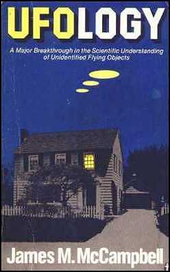

Une percée majeure dans la compréhension scientifique des Objets Volants Non-Identifiés
McCampbell, J.: Belmont, Calif., Jaymac Co., 1976 Initialement avec sous-titre "New Insights From Science And Common Sense", 1973
Couverture du livre d'origine

Remerciements
Préface
- Ovnis certifiés
- Les véhicules
- Composition & luminosité
- Sons
- Interférence électrique
- Effets physiologiques
- Vol & propulsion
- Pilotes & passagers
- Activités sur Terre
- Quelques remarques de conclusion